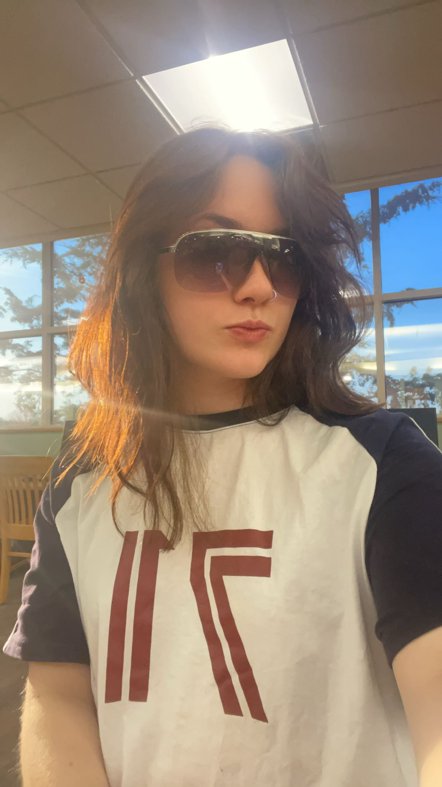

More About CSS & HTML Tools
Research on Hover Effects
W3Schools is one of the excellent sources for expanding one's knowledge on the many creative tools that come with the usage of CSS with HTML. I've decided to learn the Zoom Effect on certain images when your mouse hovers over it.
I've also decided to add this effect on the picture of me since it will emphasize the creator of this website! This decision was based more of interactivity with user instead of functionality. Even though a lot of my other work on this website is focused on having a organized look, I wanted to add something a little fun to spice up the look of the website. The zoom effect is a kind of element that would be put to good use for showcasing images on websites. Also for important images.
The zoom effect on any website opens up a world for the user. Making the website more interactive makes the user focused and interested even more which is why is such a valuable tool to add on to certain images. Even though only CSS and HTML was used, JavaScript can be used in other situations if the creator wants the user to focus on a specific area of the image which is also helpful. W3Schools isn't the only source that can help when operating with the zoom effect. CodePen.IO offers various kinds of presets to insert into HTML or CSS. Code Pen is very resourceful if the creator is looking for all different kinds of effects for the zoom. W3Schools is better for learning how to create one as Code Pen offers more of an already made code to copy and paste. Another website such as Smashing Magazine shows how to design different hover effects which includes the zoom in effect. Smashing Magazines does not specifically focus on the zoom effect yet it does show all different kinds of animations one could create or operate with all under the category of the hover effect. So when viewing this exact page, when you hover your mouse of the photo of me below it shall become a bit bigger and zoom in. Other notable hover effects are transitions. There are many kinds of transitions but a popular one Smashing Magazines and Code Pen mention are the fading transition. The fading transitions are very nice to work with since you can choose the timing and the opacity of the transition which makes for such unique variations. After researching such hover effects, it makes me excited for future websites to add all different kinds of effects for the user.
